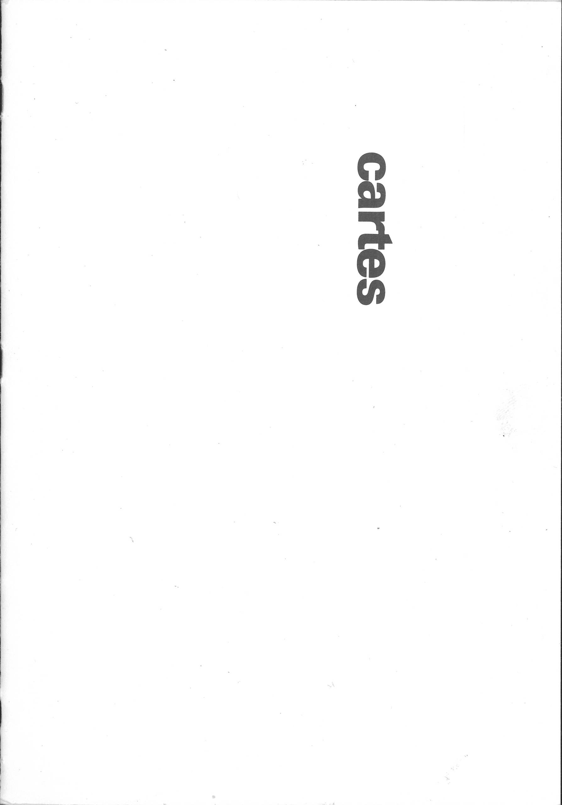

Lucas LESAULNIER
design graphique & autres
à propos
Cartes (2021)
édition entièrement produite en collages
issus d'un livre destiné à la poubelle.
Collages, 16 pages, 148X210mm (A5), reliure agrafée.
